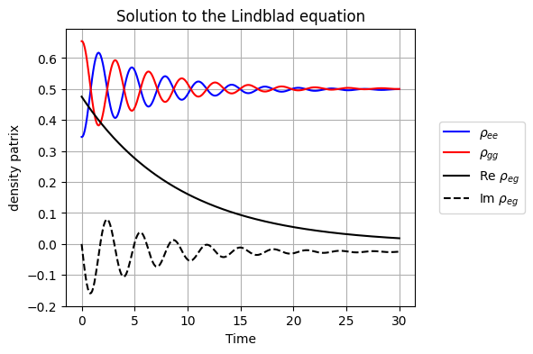
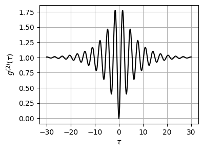

3.3. QME: Numerical Solution#
We solve the master equation numerically using QuTiP package. Here is the master equation again.
\[
\frac{d}{dt} \rho = -\frac{i}{\hbar} \left[H_\text{rwa},\rho\right]+ \mathcal{D}(\rho)
\]
with
\[
H_\text{rwa} = \frac{\hbar}{2}{\Delta} \sigma_{3} + \frac{\hbar}{2} \Omega \sigma_{1}
\]
and
\[\begin{split}
\mathcal{D}(\rho) = \gamma_{0} (N+1) \left(\sigma_{-}\rho\sigma_{+} - \frac{1}{2} \sigma_{+}\sigma_{-}\rho - \frac{1}{2} \rho \sigma_{+}\sigma_{-} \right)\\+\gamma_{0} N \left(\sigma_{+}\rho\sigma_{-} - \frac{1}{2} \sigma_{-}\sigma_{+}\rho - \frac{1}{2} \rho \sigma_{-}\sigma_{+\\} \right)
\end{split}\]
The difference from the numerical calculation in Section 2.1 is only the presence of the driving term. Hence, we just modify the previous code. Try different values for \(\Delta\) and \(\Omega\).
3.3.1. Time evolution of density operator#
The difference from the numerical calculation in Section 2.1 is only the presence of the driving term. Hence, we just modify the previous code. Try different values for \(\Delta\) and \(\Omega\).
# ignore warnings (qutip issues various unwanted warnings)
import warnings
warnings.filterwarnings('ignore')
import matplotlib.pyplot as plt
import numpy as np
from qutip import *
# Parameters
omega0 = 1.0
Delta = 0.0 # detuning
gamma0 = 0.1 # spontaneous emission rate
temperature = 1.0 # tempeature of photon gas
Omega = 2.0 # Rabi frequency
N = 1/(np.exp(omega0/temperature)-1) # Planck distribution
theta = 2*np.pi/10 # initial condition
gamma1 = gamma0 * N # coefficient to absorption
gamma2 = gamma0 * (N+1) # coefficient to emission
gamma = gamma1+gamma2
# Hamiltonian for a two-level system (in the rotating frame)
H = 0.5 * Delta * sigmaz() + 0.5 * Omega * sigmax()
# Jump operators
c_ops = [np.sqrt(gamma1) * sigmap(),np.sqrt(gamma2) * sigmam()]
# Initial state: start in the ground state |g>
psi0 = basis(2,0)*np.sin(theta) + basis(2,1)*np.cos(theta)
# evaluation time
times = np.linspace(0, 30, 300)
# observables to compute
observables = [sigmax(),sigmay(),sigmaz()]
# solve the Lindblad Equation
result = mesolve(H, psi0, times, c_ops, observables)
# Construct the density matrix from the results
r_list = []
k=len(result.expect[0])
i=0
s0 = np.eye(2,2)
s1 = np.array([[0,1],[1,0]])
s2 = np.array([[0,-1j],[1j,0]])
s3 = np.array([[1,0],[0,-1]])
while i<k:
r = (s0+result.expect[0][i]*s1+result.expect[1][i]*s2+result.expect[2][i]*s3)/2
r_list.append(r)
i += 1
rho = np.array(r_list) # density matrix as a function of time
# 4. Plotting the Time Evolution
plt.figure(figsize=(5, 4))
plt.plot(times,rho[:,0,0].real, label=r"$\rho_{ee}$",c='b')
plt.plot(times,rho[:,1,1].real, label=r"$\rho_{gg}$",c='r')
plt.plot(times,rho[:,0,1].real, label=r"Re $\rho_{eg}$",c='k')
plt.plot(times,rho[:,0,1].imag, label=r"Im $\rho_{eg}$",c='k',linestyle='--')
plt.title("Solution to the Lindblad equation")
plt.xlabel("Time")
plt.ylabel("density patrix")
plt.legend(bbox_to_anchor=(1.05, 0.5),loc="center left")
plt.grid(True)
plt.show()

3.3.2. The second order coherence#
We can use the same code as given in Section 2.1. The coherence vanishes at \(\tau=0\) as expected for the emission from a single TLS. Notice the Rabi oscillation around the dip caused by the driving.
# Continued from the previous code block.
# You need to execute it before running this code.
g2, G2 = coherence_function_g2(H, None, times, c_ops, sigmam())
plt.figure(figsize=(4,3))
plt.plot(times, np.real(g2),c='k')
plt.plot(-times,np.real(g2), c='k')
plt.xlabel(r'$\tau$')
plt.ylabel(r'$g^{(2)}(\tau)$')
plt.grid(True)
plt.show()
